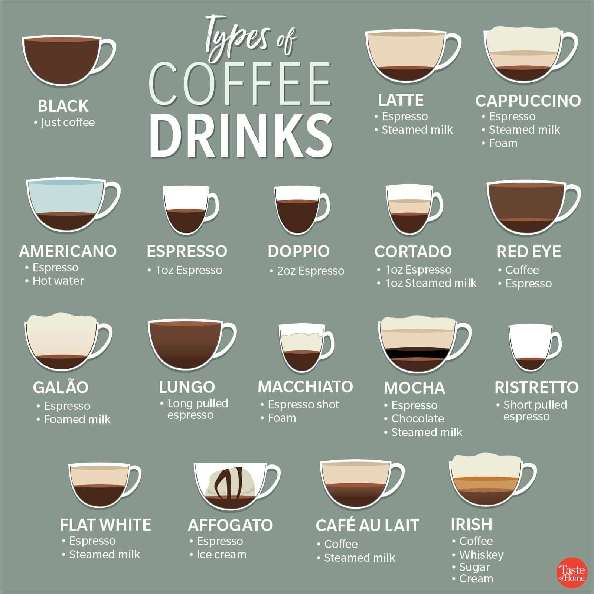

Principales tipos de café en función de su preparación
Resulta de gran utilidad tener en cuenta que existe una amplia variedad de tipos de café en base al tipo de preparación que llevamos a cabo
con los granos o si lo acompañamos con elementos como la leche, el cacao o incluso bebidas alcohólicas. Algunos de los más conocidos son los siguientes.
1. Expresso/ Café solo
Uno de los tipos de café más básicos y sencillos, únicamente consta de un infusión de café la cual se realiza hirviendo agua en contacto con el grano. Se
puede preparar en pocos segundos. Se trata de un tipo de café corto, y su tamaño suele ser de alrededor de 30 cl. Es habitual el uso de café de la variante
arábiga. Habitualmente suele tener algo de espuma por encima.
2. Ristretto
Esta variante del espresso se caracteriza por tener la misma cantidad de café que el anterior pero emplear para ello una proporción menor de agua.
3. Cortado o macchiato
Uno de los más demandados por lo general, llamamos cortado o macchiato a un tipo de café espresso a la cual se le agrega una ligera cantidad de leche, que
manche o tiña el café.
4. Americano
El café americano es un tipo de café derivado del espresso el cual se caracteriza por añadir una cantidad de agua mucho mayor de lo habitual en este tipo de
preparación, teniendo como resultado un producto con un sabor menos potente y algo más aguado, algo que lo hace menos amargo y facilita un sabor dulce.
5. Lungo/largo
El conocido como café largo es un tipo de café en el que la extracción de agua en contacto con los granos de café se realiza de manera más prolongada, lo que
conlleva una mayor cantidad de infusión.
6. Carajillo
El carajillo es un café preparado como un espresso al cual se le añade además de la infusión una cierta cantidad de alguna bebida espirituosa, siendo lo más
general el brandy, el orujo o el whisky. Para ello generalmente primero se hecha el licor previamente calentado, al cual se le añadirá el café y posteriormente
se le pueden agregar otros elementos como azúcar. Si se emplea brandy junto con ralladura de limón, pasamos a tener el llamado café brulé.

7. Café con leche
Semejante al cortado, el café con leche supone la incorporación de leche al café, solo que en esta ocasión se utiliza una proporción igual o semejante del
lácteo y el café. Tiene un sabor más dulce y mucho menos intenso, pero sigue siendo potente a nivel de presencia de cafeína.
8. Café bombón
Una versión mucho más endulzada del café con leche es la variante conocida café bombón, en el que se sustituye la leche normal por la leche condensada. Lo
habitual es que se ponga primero ésta para luego agregar el café.
9. Capuchino
El capuchino es otro de los cafés más habituales, siendo semejante al café con leche con la excepción de que en este caso solo encontraremos alrededor de un
tercio de café, siendo el resto leche. Por lo general gran parte de esta es espumada, y suele añadírsele de forma espolvoreada algo de cacao en polvo para
darle un sabor más dulce.
10. Mocca
Se trata de una variante del café con leche en el que además de leche y café se emplea obligatoriamente chocolate o cacao en forma de sirope o polvo.
11. Café irlandés
Un tipo de espresso doble en el cual se le añade Whisky y una capa consistente de nata montada o crema. Suele servirse en copa de cóctel.

12. Café vienés
Un tipo de café que puede ser espresso simple o doble el cual se acompaña en vez de leche por crema o nata, en una proporción inferior a la del propio café.
13. Frappé
Una de las pocas variantes cuya conceptualización es directamente como café frío, el frappé se elabora con café instantáneo molido, hielo y crema de leche o nata.
14. Azteca
Poco conocido y también conceptualizado como café frío, esta variedad se caracteriza por incorporar además de café, hielo y leche una o más bolas de helado,
independientemente de su sabor (pero lo general de chocolate). Prácticamente se acerca más a un postre que a una infusión.